第 16 讲：光线追踪（三）——蒙特卡洛路径追踪
用蒙特卡洛积分求解渲染方程，把 Whitted-Style 光线追踪升级成能渲染全局光照的路径追踪器
◆ 学完这一讲，你应该能
理解蒙特卡洛积分的思想，能写出估计量公式并解释无偏性
能推导均匀采样的蒙特卡洛估计量，并说明方差与样本数的关系
能把渲染方程改写成蒙特卡洛求和形式，实现直接光照的着色
理解路径追踪的递归形式，并说明为什么必须引入俄罗斯轮盘赌
能解释为什么对半球均匀采样效率低，并推导对光源采样的转换公式
能写出完整的路径追踪伪代码（直接光照 + 间接光照 + 阴影测试）
核心结论速记
蒙特卡洛积分用随机采样的平均值估计定积分：\(F_N = \frac{1}{N}\sum_{i=1}^N \frac{f(X_i)}{p(X_i)}\)，样本越多方差越小。
渲染方程是一个半球上的积分，可以直接用蒙特卡洛方法数值求解，得到正确的直接光照着色算法。
路径追踪在着色点随机选一个方向弹射光线，递归地收集间接光照，从而渲染全局光照。
递归不会自然停止，必须用俄罗斯轮盘赌（Russian Roulette）以概率 \(P\) 继续并除以 \(P\)，保证期望不变且算法终止。
对半球均匀采样时大量光线浪费在打不到光源上；改为对光源采样（直接光照）可显著降低噪声。
对光源采样需要把渲染方程从立体角积分转换为面积积分，引入几何项 \(\frac{\cos\theta'}{\|x'-p\|^2}\)。
路径追踪是“几乎 100% 正确”的全局光照算法，结果是照片级真实的；现代光线追踪泛指一般光传输求解。
011. 从渲染方程到蒙特卡洛：为什么需要数值积分
上一讲我们得到了渲染方程（Rendering Equation）：
\[\nL_o(p, \omega_o) = L_e(p, \omega_o) + \int_{\Omega^+} L_i(p, \omega_i) f_r(p, \omega_i, \omega_o) (n \cdot \omega_i) \, d\omega_i \] \n它说：一个点向某个方向发出的光，等于它自己发的光，加上它从半球所有方向接收到的光、经过 BRDF 反射后贡献的总和。这个积分在解析上几乎不可能求出来——被积函数里 \(L_i\) 本身又是别的点的渲染方程，递归嵌套。 \nWhitted-Style 光线追踪做了两个简化：镜面反射/折射一直追，漫反射表面就停。但课件指出这会导致两个问题：
- 光泽（glossy）材质：反射方向不是单一镜面方向，而是一个 lobe，Whitted-Style 不知道往哪追。
- 漫反射之间没有反射：Cornell box 里红墙和绿墙的颜色会互相“染色”，Whitted-Style 渲染不出来，而路径追踪的全局光照可以。 \n所以 Whitted-Style 是错的，但渲染方程是对的。要解它，需要两件事：数值积分 + 递归。数值积分的工具就是蒙特卡洛积分（Monte Carlo Integration）。
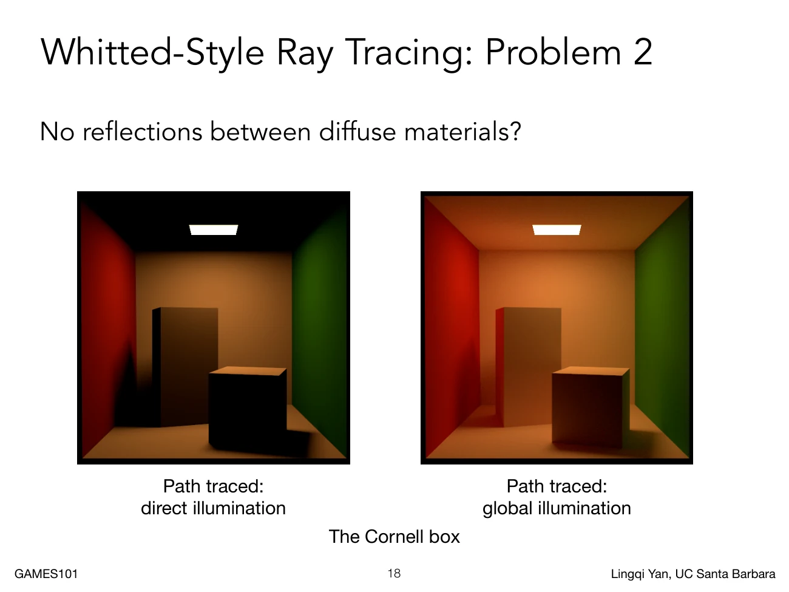
补充说明
渲染方程中所有方向都默认朝外（半球 \(\Omega^+\)），这是后面写代码时余弦项符号正确的前提。
常见坑
把 Whitted-Style 当成“光线追踪”的全部 → 现代光线追踪是求解渲染方程，Whitted-Style 只是特例 → 记住课件结论：Whitted-Style 是错的，渲染方程是对的。
UE / Unity 落地
UE 的 Lumen 本质上就是一套实时的全局光照/路径追踪近似；Unity 的 HDRP Ray Tracing / Path Tracer 也是基于同样的渲染方程。
Whitted-Style 对应传统光栅化 + 屏幕空间反射（SSR）的近似，无法处理漫反射互反射。
022. 蒙特卡洛积分：用随机平均估计定积分
直觉：定积分是曲线下的面积。与其精确算面积，不如在区间里随机撒点，取这些点函数值的平均，再乘以区间长度。撒的点越多，估计越准。
定义：要估计 \(\int_a^b f(x)\,dx\)，从一个概率密度函数（PDF）\(p(x)\) 中独立采样 \(X_i\)，构造蒙特卡洛估计量（Monte Carlo estimator）：
\[\nF_N = \frac{1}{N} \sum_{i=1}^{N} \frac{f(X_i)}{p(X_i)} \] \n它的期望等于真实积分：\(E[F_N] = \int_a^b f(x)\,dx\)，所以是无偏估计。
均匀采样的特例：若 \(X_i \sim p(x) = \frac{1}{b-a}\)（常数），则
\[\nF_N = \frac{b-a}{N} \sum_{i=1}^{N} f(X_i) \] \n这就是最朴素的“平均函数值 × 区间长度”。
关键性质：
- 样本数 \(N\) 越大，方差越小（收敛速度 \(O(1/\sqrt{N})\)，不快但通用）。
- 在哪个变量上采样，就在哪个变量上积分：如果 \(X_i\) 采自 \(p(x)\)，积分变量必须是 \(x\)；后面把半球采样换成光源采样时，必须同步把积分变量从立体角换成面积。
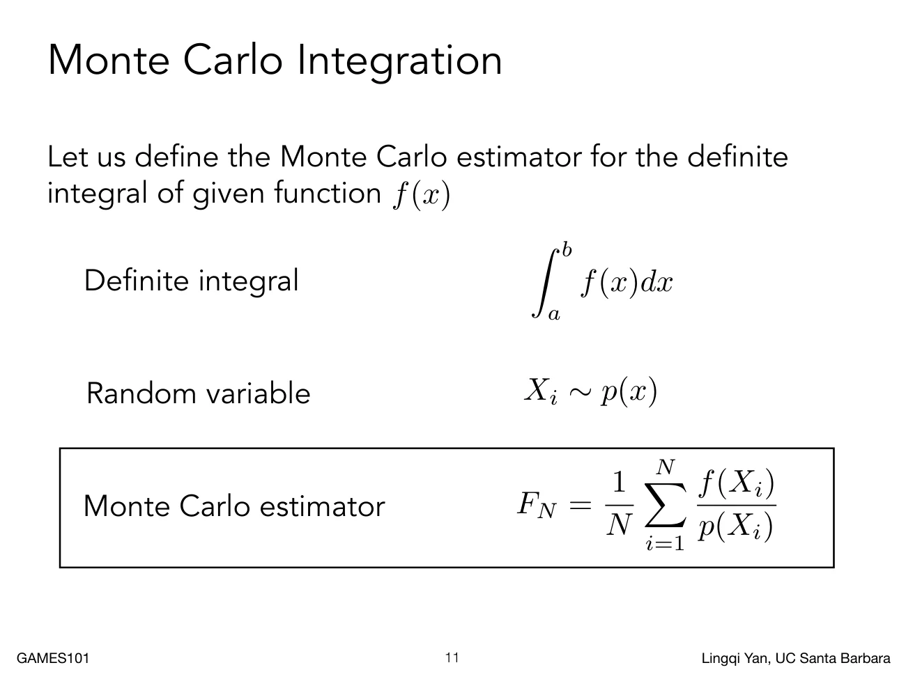
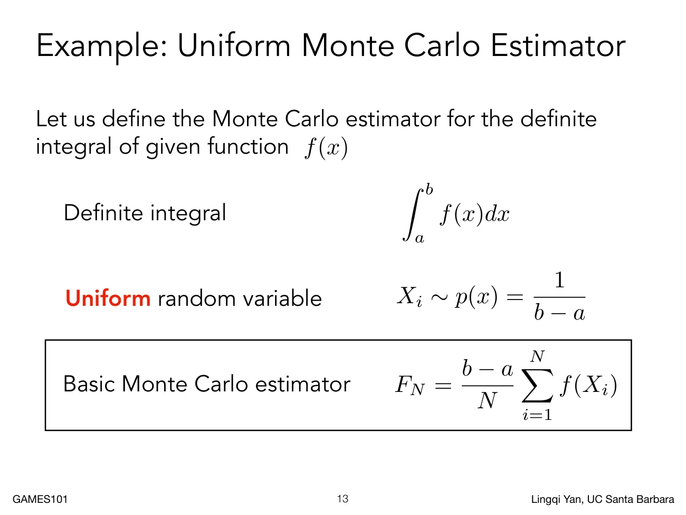
补充说明
收敛速度 \(O(1/\sqrt{N})\) 意味着噪声减半需要 4 倍样本，这是路径追踪“噪”的根本原因。
常见坑
PDF 没有归一化（积分不等于 1）→ 估计量有偏、整体亮度错误 → 检查 \(\int p(x)dx = 1\)。
在 \(x\) 上采样却在 \(\omega\) 上积分 → 结果量纲/数值完全错误 → 采样域和积分域必须一致。
以为样本越多结果越“正确” → 蒙特卡洛是无偏的，样本少只是方差大（噪声），不是系统性错误。
UE / Unity 落地
UE/Unity 的实时降噪（TAA、DLSS、UE 的 Lumen 降噪）本质上是在低样本数下降低蒙特卡洛方差。
材质编辑器里的“采样数”参数（如 Unity 的 Accumulation、UE 的 Path Tracer Samples）直接对应这里的 \(N\)。
均匀蒙特卡洛估计定积分（cpp）
double monteCarloUniform(std::function<double(double)> f, double a, double b, int N) {
double sum = 0.0;
for (int i = 0; i < N; ++i) {
double x = a + (b - a) * rand01(); // 均匀采样
sum += f(x);
}
return (b - a) * sum / N; // 均匀 pdf = 1/(b-a)
}033. 直接光照的蒙特卡洛解法
现在把蒙特卡洛用到渲染方程上。先只考虑直接光照：着色点 \(p\) 只接收来自光源的光，不接收其他物体反射的光。 \n渲染方程： \[\nL_o(p, \omega_o) = \int_{\Omega^+} L_i(p, \omega_i) f_r(p, \omega_i, \omega_o) (n \cdot \omega_i) \, d\omega_i \] \n这是一个半球方向上的积分。令被积函数 \[\nf(\omega_i) = L_i(p, \omega_i) f_r(p, \omega_i, \omega_o) (n \cdot \omega_i) \] \n假设在半球上均匀采样，则 PDF 为常数 \(p(\omega_i) = \frac{1}{2\pi}\)（半球立体角为 \(2\pi\)）。代入蒙特卡洛估计量：
\[\nL_o(p, \omega_o) \approx \frac{1}{N} \sum_{i=1}^{N} \frac{L_i(p, \omega_i) f_r(p, \omega_i, \omega_o) (n \cdot \omega_i)}{p(\omega_i)} \] \n当 \(p(\omega_i) = 1/(2\pi)\) 时，等价于 \[\nL_o \approx \frac{2\pi}{N} \sum_{i=1}^{N} L_i f_r (n \cdot \omega_i) \]
代码结构（课件伪代码）：
\nshade(p, wo)
Lo = 0
随机采 N 个方向 wi ~ pdf
对每个 wi:
从 p 向 wi 发射光线 r
如果 r 打到光源:
Lo += (1/N) * L_i * f_r * cos(theta) / pdf(wi)
返回 Lo
\n这就是一个正确的直接光照着色算法。注意：光线打到光源才累加，否则贡献为 0。
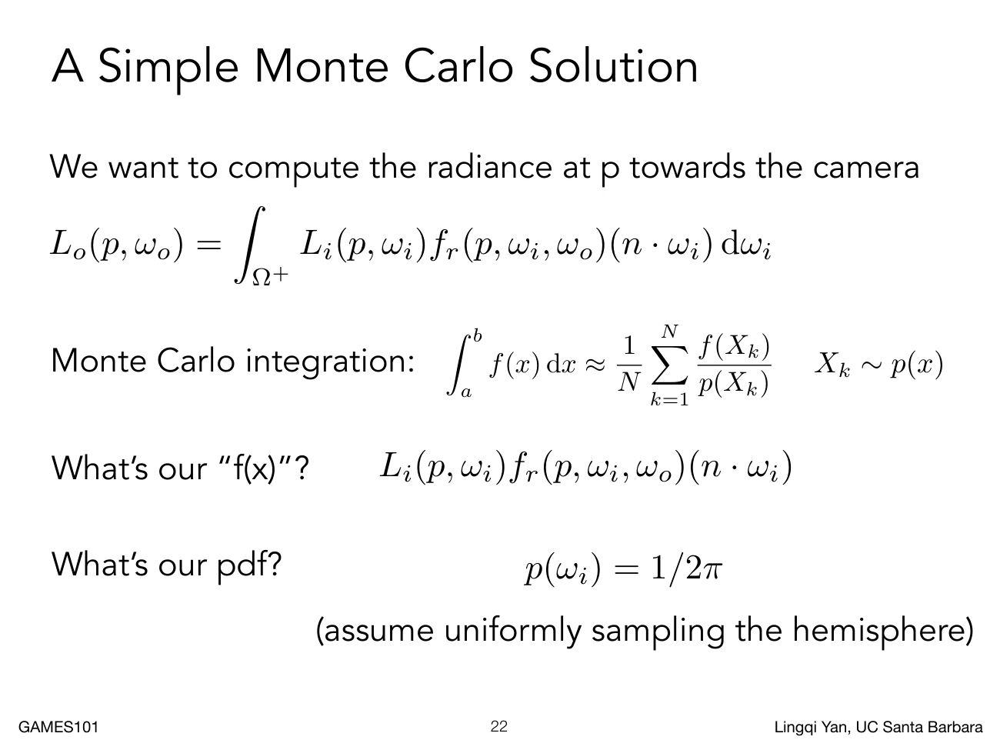
补充说明
课件 P21 写 pdf = 1/π，严格说半球均匀采样 pdf 应为 1/(2π)；以课件公式为准时注意其上下文可能指投影立体角。考试/实现时以 \(1/(2\pi)\) 为准。
常见坑
余弦项 \((n \cdot \omega_i)\) 没有 clamp 到非负 → 背面方向贡献负值 → 采样前保证 \(\omega_i\) 在半球内，或对余弦取 max(0, ·)。
忘记除以 PDF → 结果整体偏亮/偏暗 → 检查公式里是否有 \(/p(\omega_i)\)。
把 \(L_i\) 当成常量 → 实际上 \(L_i\) 依赖方向，光源有面积时不同方向亮度不同。
UE / Unity 落地
UE 的 Deferred Shading 直接光照就是解析地算直接光照；路径追踪器则用这里的蒙特卡洛方式。
Unity 的 Progressive Lightmapper 在烘焙直接光照时也做类似的半球采样。
直接光照的蒙特卡洛着色（伪代码）（cpp）
Vec3 shadeDirect(Point p, Vec3 wo, int N) {
Vec3 Lo(0);
for (int i = 0; i < N; ++i) {
Vec3 wi = uniformSampleHemisphere(); // pdf = 1/(2*pi)
double pdf = 1.0 / (2.0 * M_PI);
Ray r(p, wi);
Hit h = trace(r);
if (h.hitLight) {
double cosTheta = dot(p.normal, wi);
Lo += (1.0 / N) * h.Le * brdf(wo, wi) * cosTheta / pdf;
}
}
return Lo;
}044. 全局光照：让光线递归弹射
直接光照只算光源直接照到 \(p\) 的光。但现实中，光线打到其他物体后还会反射到 \(p\)——这就是间接光照（indirect illumination）。
关键观察：如果从 \(p\) 发出的光线打到了物体上的点 \(q\)，那么 \(q\) 也会把光反射给 \(p\)。反射多少？就是 \(q\) 点朝 \(-\omega_i\) 方向的着色结果（radiance）。
\n于是把 shade 改成递归：
\nshade(p, wo)
Lo = 0
随机采 N 个方向 wi ~ pdf
对每个 wi:
发射光线 r(p, wi)
如果 r 打到光源:
Lo += (1/N) * L_i * f_r * cos / pdf
否则如果 r 打到物体 q:
Lo += (1/N) * shade(q, -wi) * f_r * cos / pdf
返回 Lo
\n这就是路径追踪（Path Tracing）的雏形。但立刻遇到两个问题：
- 光线数爆炸：如果每个着色点采 \(N\) 条光线，弹射 \(B\) 次，总光线数是 \(N^B\)。\(N=100, B=5\) 就是 \(10^{10}\)，不可接受。
- 递归不终止：光线永远弹下去，程序不会停。 \n先解决第一个：令 \(N=1\)，每个着色点只随机选一个方向。这样总光线数随弹射次数线性增长。代价是噪声变大——但噪声可以通过每个像素发射多条路径并平均来消除（见下一节）。
注意：\(N=1\) 的路径追踪才叫 path tracing；\(N>1\) 时叫 distributed ray tracing。
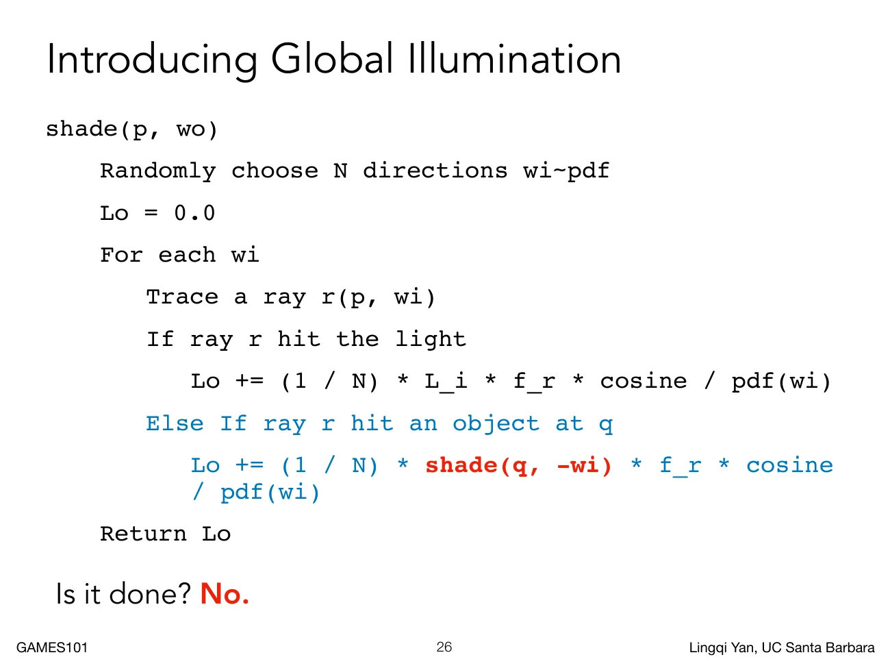
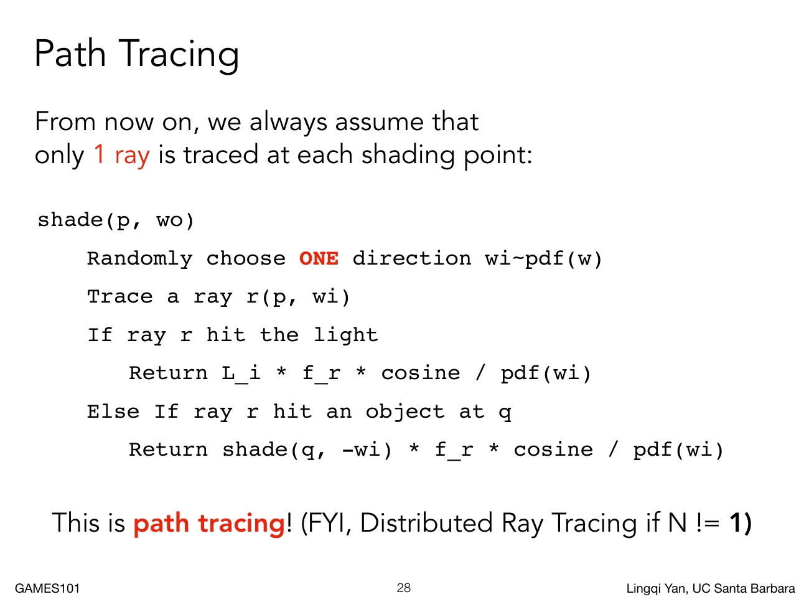
补充说明
路径追踪的“路径”指从相机出发、经过多次弹射最终可能到达光源的一条折线。
常见坑
每个着色点仍采 N>1 条光线 → 光线数指数爆炸 → 改为 N=1，靠每像素多路径平均降噪。
递归调用时方向符号写错 → 间接光照方向错误 → 注意
shade(q, -wi)，因为从 q 看向 p 的方向是 -wi。把间接光照和直接光照重复累加 → 亮度偏亮 → 直接光照和间接光照是互斥分支（打到光源 vs 打到物体）。
UE / Unity 落地
UE 的 Lumen 用屏幕空间/距离场追踪来近似这种递归弹射；硬件光追（DXR）则真实发射光线。
Unity 的 Ray Tracing 支持递归深度设置（Max Bounces），对应这里的弹射次数。
N=1 的路径追踪（递归版，尚未加 RR）（cpp）
Vec3 shade(Point p, Vec3 wo) {
Vec3 wi = uniformSampleHemisphere(); // pdf = 1/(2*pi)
double pdf = 1.0 / (2.0 * M_PI);
Ray r(p, wi);
Hit h = trace(r);
if (h.hitLight) {
return h.Le * brdf(wo, wi) * dot(p.normal, wi) / pdf;
} else if (h.hitObject) {
return shade(h.point, -wi) * brdf(wo, wi) * dot(p.normal, wi) / pdf;
}
return Vec3(0);
}055. 俄罗斯轮盘赌：让递归停下来且不损失能量
递归必须停，但直接砍掉弹射次数会丢失能量（画面变暗），因为光确实会一直弹。
俄罗斯轮盘赌（Russian Roulette, RR）用一个概率技巧解决：
- 设定一个概率 \(P \in (0,1)\)。
- 以概率 \(P\) 继续发射光线，并把返回结果除以 \(P\)：\(L_o / P\)。
- 以概率 \(1-P\) 不发射光线，返回 0。
为什么期望不变： \[\nE = P \cdot \frac{L_o}{P} + (1-P) \cdot 0 = L_o \] \n也就是说，虽然单条路径的结果是随机的（有时 0，有时偏大），但平均下来仍然是无偏的。样本足够多时，画面正确且不会无限递归。
代码：
\nshade(p, wo)
P_RR = 0.8 // 手动指定
ksi = rand01()
如果 ksi > P_RR: return 0
随机选一个方向 wi ~ pdf
发射光线 r(p, wi)
如果打到光源: return L_i * f_r * cos / pdf / P_RR
如果打到物体 q: return shade(q, -wi) * f_r * cos / pdf / P_RR
\n注意除以 \(P_{RR}\) 的位置：所有返回值都要除，因为“继续”这个事件本身概率是 \(P_{RR}\)。
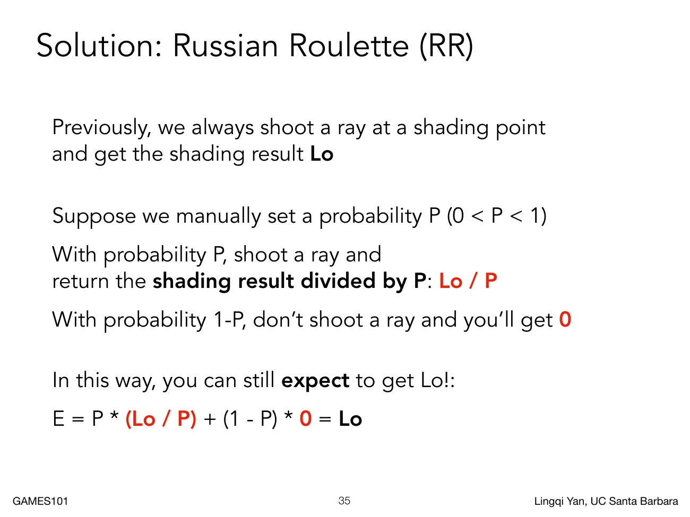
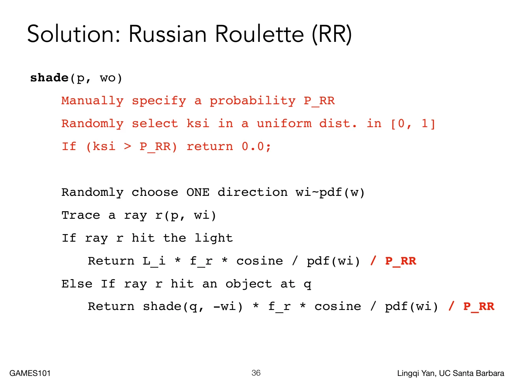
补充说明
RR 的“除以 P”思想在蒙特卡洛里很通用：任何“以概率 P 做某事”的采样，都要除以 P 保持无偏。
常见坑
除以 \(P\) 的位置漏掉某个分支 → 期望有偏、画面偏暗 → 所有非零返回分支都要除以 \(P_{RR}\)。
\(P_{RR}\) 设得太小 → 路径很快终止，噪声极大 → 一般设 0.5~0.95，或按材质反照率自适应。
\(P_{RR}\) 设为 1 → 等于没有 RR，递归不终止 → 必须严格小于 1。
UE / Unity 落地
UE 的 Path Tracer 有“Max Bounces”硬上限，同时内部用 RR 类技术提前终止低贡献路径。
Unity 的 Ray Tracing 也有最大弹射次数；RR 是离线渲染器（如 Cycles、Arnold）的标准配置。
加入俄罗斯轮盘赌的 shade（cpp）
Vec3 shade(Point p, Vec3 wo) {
double P_RR = 0.8;
if (rand01() > P_RR) return Vec3(0);
Vec3 wi = uniformSampleHemisphere();
double pdf = 1.0 / (2.0 * M_PI);
Ray r(p, wi);
Hit h = trace(r);
Vec3 contrib(0);
if (h.hitLight) contrib = h.Le * brdf(wo, wi) * dot(p.normal, wi) / pdf;
else if (h.hitObject) contrib = shade(h.point, -wi) * brdf(wo, wi) * dot(p.normal, wi) / pdf;
return contrib / P_RR;
}066. 对光源采样：把浪费的光线找回来
N=1 + RR 的路径追踪已经正确，但效率很低：半球均匀采样时，只有极少数方向能打到光源（尤其光源小的时候），大量光线浪费在打不到光源的方向上。
解决思路：直接对光源采样。蒙特卡洛允许任意 PDF，所以我们可以让采样点落在光源上。 \n但渲染方程是在立体角上积分，而光源采样是在面积上。需要换元：
\[\nd\omega = \frac{\cos\theta'}{\|x' - p\|^2} \, dA \] \n其中 \(x'\) 是光源上的点，\(\theta'\) 是光源表面法线与 \(x'-p\) 的夹角。代入渲染方程：
\[\nL_o(p, \omega_o) = \int_A L_i(p, \omega_i) f_r(p, \omega_i, \omega_o) \frac{\cos\theta \cos\theta'}{\|x' - p\|^2} \, dA \] \n其中 \(\cos\theta = (n \cdot \omega_i)\) 是着色点法线与入射方向的夹角余弦。 \n现在对光源面积均匀采样，PDF = \(1/A\)（A 是光源面积）。蒙特卡洛估计：
\[\nL_o \approx \frac{1}{N} \sum_{i=1}^{N} L_i f_r \frac{\cos\theta \cos\theta'}{\|x' - p\|^2} \cdot A \]
完整算法把着色拆成两部分：
- 直接光照：对光源采样，不需要 RR（因为一定会打到光源）。
- 间接光照：对半球采样，用 RR 控制递归。 \n还要加阴影测试：从 \(p\) 向光源采样点 \(x'\) 发射一条光线，如果中途被挡住，则直接光照贡献为 0。
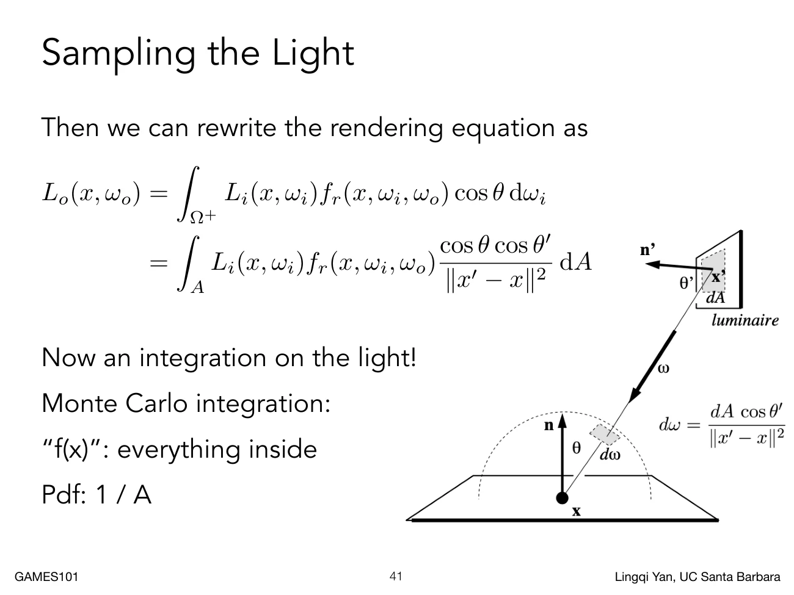
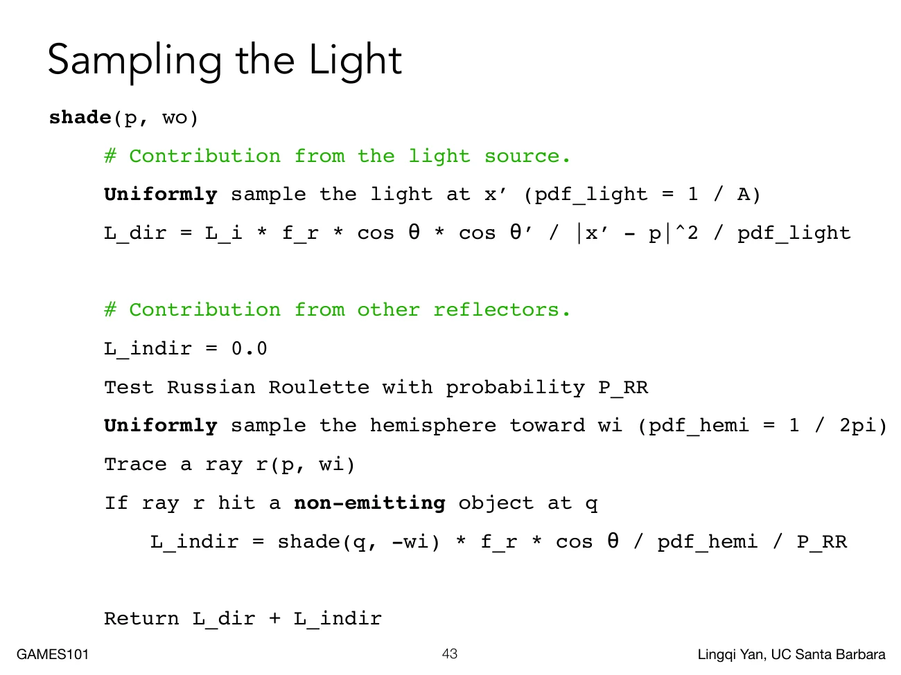
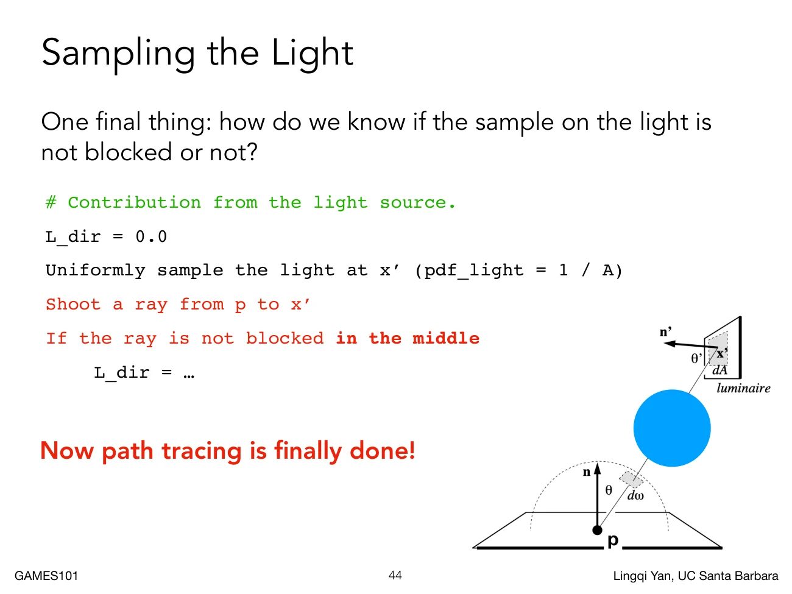
补充说明
直接光照对光源采样后，理论上不需要 RR；间接光照仍用 RR。两部分相加得到最终 radiance。
常见坑
忘记乘光源面积 A → 直接光照整体偏暗 → PDF = 1/A，估计量里要除以它，等价于乘 A。
几何项里用了着色点的 \(\theta\) 而不是光源的 \(\theta'\) → 结果错误 → 两个余弦都要乘，分别对应着色点和光源。
光源采样后没有做阴影测试 → 物体背后仍然被照亮（漏光）→ 必须从 p 向 x' 发射遮挡光线。
光源是双面发光时只按单面采样 → 能量少一半 → 根据光源类型决定是否要采样两面。
UE / Unity 落地
UE 的 Lumen 对天空光和自发光表面做重要性采样；Unity 的 Lightmapper 对面积光源采样。
实时渲染中的“光源采样”对应直接光照的解析计算（如 punctual light），路径追踪里则显式采样面积光源。
直接光照对光源采样 + 间接光照对半球采样（完整路径追踪）（cpp）
Vec3 shade(Point p, Vec3 wo) {
Vec3 L_dir(0), L_indir(0);
// ---- 直接光照：对光源采样 ----
Point x_prime = uniformSampleLight(); // pdf_light = 1/A
double pdf_light = 1.0 / lightArea;
Vec3 wi = normalize(x_prime - p);
double cosTheta = dot(p.normal, wi);
double cosThetaPrime = dot(lightNormal, -wi);
double dist2 = lengthSquared(x_prime - p);
if (cosTheta > 0 && cosThetaPrime > 0) {
Ray shadowRay(p, wi);
if (!traceShadow(shadowRay, length(x_prime - p))) { // 未被遮挡
L_dir = lightLe * brdf(wo, wi) * cosTheta * cosThetaPrime / dist2 / pdf_light;
}
}
// ---- 间接光照：对半球采样 + RR ----
double P_RR = 0.8;
if (rand01() < P_RR) {
Vec3 wi2 = uniformSampleHemisphere();
double pdf_hemi = 1.0 / (2.0 * M_PI);
Ray r(p, wi2);
Hit h = trace(r);
if (h.hitObject && !h.isLight) {
L_indir = shade(h.point, -wi2) * brdf(wo, wi2) * dot(p.normal, wi2) / pdf_hemi / P_RR;
}
}
return L_dir + L_indir;
}077. 像素、路径与最终图像
路径追踪的光线生成（ray generation）和普通光线追踪类似：对每个像素，在像素内均匀采样多个位置，从相机向采样点发射光线，打到场景后调用 shade，把结果累加平均。
\nray_generation(camPos, pixel)
pixel_radiance = 0
在像素内均匀采 N 个样本点
对每个样本:
发射光线 r(camPos, cam_to_sample)
如果打到场景 p:
pixel_radiance += (1/N) * shade(p, sample_to_cam)
返回 pixel_radiance
噪声与 SPP：每个像素的路径数叫 SPP（samples per pixel）。SPP 低时噪声大，SPP 高时噪声小但渲染慢。因为蒙特卡洛收敛是 \(O(1/\sqrt{N})\)，SPP 翻 4 倍噪声才减半。
路径追踪正确吗？课件给出 Cornell box 对比：路径追踪的全局光照结果与真实照片几乎一致，是“照片级真实（photo-realistic）”的。
现代光线追踪的概念：以前“光线追踪”等于 Whitted-Style；现代光线追踪泛指一般光传输求解，包括单向/双向路径追踪、光子映射、Metropolis 光传输、VCM/UPBP 等。
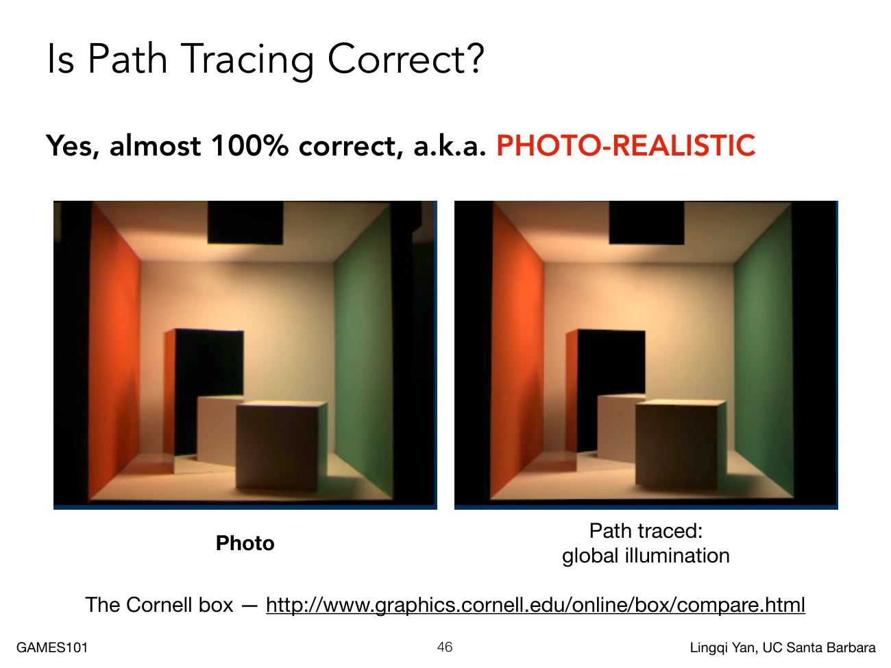
补充说明
课件 P48 提到：像素的 radiance 是穿过该像素所有路径 radiance 的平均，这涉及像素重建滤波器（pixel reconstruction filter），本讲不展开。
常见坑
像素内采样点分布不均匀 → 边缘锯齿/噪点 → 用分层采样（stratified sampling）或低差异序列。
把 SPP 和分辨率混淆 → 提高分辨率不会降低噪声，只会让噪声更细碎 → 降噪要靠增加 SPP 或降噪器。
以为路径追踪结果可以直接当颜色显示 → 还需要 gamma 校正和色调映射 → 见课件“未覆盖内容”。
UE / Unity 落地
UE 的 Path Tracer 模式可以离线渲染参考图；Lumen 是它的实时近似。
Unity 的 Accumulation 在静止时累积多帧提高 SPP，对应这里的“每像素多路径平均”。
引擎对照表
| 概念 / 效果 | Unreal Engine | Unity |
|---|---|---|
蒙特卡洛积分 | Path Tracer 的采样与降噪；Lumen 的随机采样 | Progressive Lightmapper 的采样；Ray Tracing 的 Accumulation |
俄罗斯轮盘赌 | Path Tracer 的 Max Bounces + 内部 RR | Ray Tracing 的最大弹射深度 |
对光源采样 | Lumen 对自发光表面/天空光的重要性采样 | Lightmapper 对面积光源采样 |
全局光照 | Lumen GI | Enlighten / RTGI / SSGI |
路径追踪参考渲染 | Path Tracer（Movie Render Queue） | HDRP Path Tracer |
术语双语表
| English | 中文 | 说明 |
|---|---|---|
| Monte Carlo Integration | 蒙特卡洛积分 | 用随机采样平均估计定积分的方法 |
| Probability Density Function (PDF) | 概率密度函数 | 描述随机变量取值可能性的函数，积分必须为 1 |
| Estimator | 估计量 | 由样本构造的随机变量，期望等于真实值则无偏 |
| Path Tracing | 路径追踪 | 每个着色点只采一条光线、递归弹射的全局光照算法 |
| Russian Roulette | 俄罗斯轮盘赌 | 以概率 P 继续并除以 P，使递归终止且期望不变 |
| SPP | 每像素采样数 | 每个像素发射的路径数，越高噪声越低 |
| Global Illumination | 全局光照 | 包含间接光照的完整光传输 |
| Solid Angle | 立体角 | 单位球面上投影面积，单位球面度为 sr |
| Whitted-Style Ray Tracing | Whitted 式光线追踪 | 只做镜面反射/折射、漫反射停止的简化光线追踪 |
课后练习
01 用蒙特卡洛积分估计 \(\int_0^1 x^2 dx\)，取均匀分布 PDF，写出估计量并说明 N=1000 时的大致误差量级。
查看答案
提示：
均匀分布 PDF = 1/(1-0) = 1。
估计量 \(F_N = \frac{1}{N}\sum_{i=1}^N X_i^2\)，\(X_i \sim U(0,1)\)。真实值 1/3。误差量级 \(O(1/\sqrt{N})\)，N=1000 时约 3% 量级。
02 路径追踪中为什么令 N=1？如果 N=100、弹射 5 次，总光线数是多少？
查看答案
提示：
光线数 = N^B。
N=1 使总光线数随弹射次数线性增长，避免指数爆炸。N=100、B=5 时总光线数 \(100^5 = 10^{10}\)，不可接受。
03 俄罗斯轮盘赌中，若 P=0.8，某条路径的着色结果为 L=10，问该路径返回值的期望是多少？单次运行可能返回什么？
查看答案
提示：
E = P(L/P) + (1-P)0。
期望 = 0.8(10/0.8) + 0.20 = 10。单次运行以 0.8 概率返回 12.5，以 0.2 概率返回 0。
04 把渲染方程从立体角积分转换为光源面积积分，写出转换公式并解释每个因子的含义。
查看答案
提示：
dω = cosθ'/||x'-p||^2 dA。
\(d\omega = \frac{\cos\theta'}{\|x'-p\|^2} dA\)。\(\cos\theta'\) 是光源表面法线与 \(x'-p\) 的夹角余弦，\(\|x'-p\|^2\) 是距离平方。渲染方程变为 \(\int_A L_i f_r \frac{\cos\theta \cos\theta'}{\|x'-p\|^2} dA\)，其中 \(\cos\theta\) 是着色点法线与入射方向的余弦。
05 实现一个简单的路径追踪器：场景一个面积光源 + 一个漫反射球，用对光源采样 + 半球采样 + RR，渲染 64 SPP，观察噪声并解释来源。
查看答案
提示：
直接光照对光源采样，间接光照对半球采样并 RR。
直接光照部分噪声较低（因为对光源采样），间接光照部分噪声较高（半球采样 + RR）。噪声主要来自间接光照的随机方向和 RR 的随机终止。增加 SPP 可降噪，但收敛速度是 \(O(1/\sqrt{N})\)。